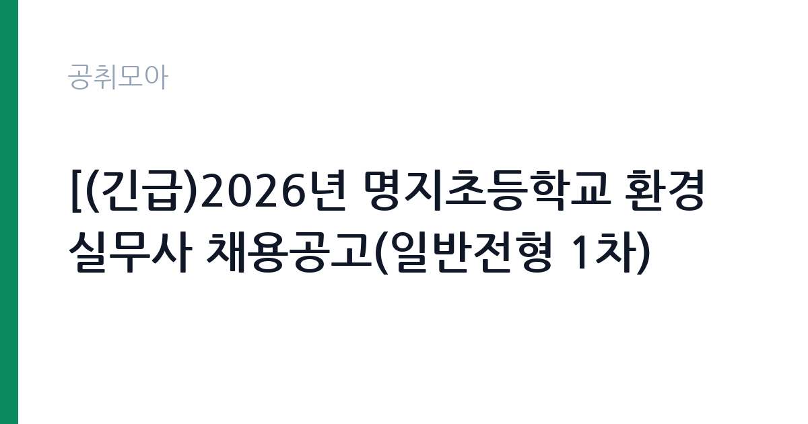

[교육청] [(긴급)2026년 명지초등학교 환경실무사 채용공고(일반전형 1차)
부산광역시교육청 부산광역시교육청학교행정지원본부 학교채용지원팀 · 부산 · 마감 2026-10-30 (D-3) · 출처 나라일터

한눈에 보는 모집 조건
| 기관 | 부산광역시교육청 부산광역시교육청학교행정지원본부 학교채용지원팀 |
|---|---|
| 공고명 | [(긴급)2026년 명지초등학교 환경실무사 채용공고(일반전형 1차) |
| 고용형태 | 정규직 |
| 근무지 | 부산 |
| 게시일 | 2026-10-27 |
| 마감일 | 2026-10-30 (D-3) |
지원자격, 이렇게 읽으세요
- 환경실무사 1명
- 접수 ~2026-10-30 마감
- 세부 조건은 원문 공고문 확인
공고문의 응시자격은 짧게 쓰여 있지만 실제로는 세 가지를 봅니다. 첫째 결격사유 해당 여부, 둘째 자격·경력의 직무 연관성, 셋째 근무 시작 가능일입니다. 셋 중 하나라도 애매하면 원문 공고문의 세부 조항을 먼저 확인하고 지원서를 쓰세요. 특히 부산광역시교육청 부산광역시교육청학교행정지원본부 학교채용지원팀 공고는 정규직 전형이라 서류에서 직무 연관 키워드(교육청)를 명시하는 게 유리합니다.
이 공고의 포인트
이 공고의 관전 포인트는 ''입니다. 부산광역시교육청 부산광역시교육청학교행정지원본부 학교채용지원팀이 내건 조건 가운데 '환경실무사 1명' 대목이 서류의 분수령이 됩니다. 해당되면 주저 없이 지원하고, 애매하면 원문 공고문의 세부 조항을 먼저 대조해 보세요. D-3 일정상 오늘 내로 판단하는 게 좋습니다.
전형은 어떻게 진행되나
대부분 서류심사 후 면접심사 순으로 진행됩니다. 서류에서는 지원서·자기소개서의 직무 적합성을 보고, 면접에서는 실무 이해도와 근무 지속 가능성을 봅니다. 마감일(2026-10-30) 직전에는 접속이 몰려 원서 접수가 막히는 경우가 있으니 최소 하루 전 제출을 권합니다. 제출 후에는 접수번호·수험표 출력 여부를 반드시 확인하세요.
원문에서 확인한 전형 방식
[(긴급)2026년 명지초등학교 환경실무사 채용공고(일반전형 1차)] 1.채용분야 및 인원:환경실무사1명 2.채용기간:2026.11.9.~(정년) 3.근무시간:09:00~14:30(주25시간) 4.원서접수 ○접수기간:2026.10.27.(화)~10. 30.(금) 18:00 ○접수방법:온라인(이메일),우편,방문 ○접수장소:부산광역시부산진구엄광로182번길49학교행정지원본부2층채용지원팀 (접수 다음날까지 접수 완료 문자를 받지 못하신 경우, 602-1940으로 반드시 연락바랍니다.) 5.경력증명서, 자격증사본 미제출시 서류심사 점수에 반영되지 않습니다. 6.학교행정지원본부의 학교별 채용 공고에 중복지원 불가합니다. (1개학교만 지원 가능) 자세한 사항은 [붙임]파일을 참고해 주시기 바라며 업무 및 근무 관련 문의는 명지초등학교 행정실(051-602-1303), 공고 관련 문의는 학교행정지원본부(051-602-1936,1940)로 연락바랍니다.
위 내용은 부산광역시교육청 부산광역시교육청학교행정지원본부 학교채용지원팀 원문 공고의 전형 항목을 그대로 옮긴 것입니다. 단계별 배수와 평가 요소가 적혀 있으니 본인 강점과 맞는 단계에 맞춰 준비 순서를 정하세요. 전형별 합격자 발표일도 원문에서 함께 확인하는 것이 좋습니다.
이런 분께 추천해요
- 부산 근무가 가능한 분 — 통근·거주 조건이 맞는지가 1순위입니다
- 정규직 전형을 찾는 분 — 교육청 분야 관심자라면 우선 검토 대상입니다
- 마감(2026-10-30) 안에 서류를 낼 수 있는 분 — D-3이니 오늘 지원서 초안부터 잡으세요
지원 전 체크리스트
- 원문 공고문의 응시자격·결격사유 정독했는가
- 자격증·경력증명서 등 증빙 스캔 준비됐는가
- 마감일(2026-10-30) 전날까지 접수 가능한가
- 근무지(부산)·근무형태(정규직) 감당 가능한가
모집 일정과 제출 타이밍
이번 공고의 접수 기간은 2026-10-27부터 2026-10-30까지입니다. 남은 기간은 약 3일입니다. 서류 준비에 2일을 쓰고 마지막 하루는 접수·확인용으로 남겨두세요. 원서 접수는 시작일보다 마감일에 몰리는 구조라, 서버가 느려지는 마감 당일은 피하는 게 상책입니다. 권장 스케줄을 짜보면 첫째 날 공고문 정독과 지원자격 체크, 중간 날 자기소개서 작성과 증빙 준비, 마감 전날 접수 시스템 사전 입력입니다. 특히 부산광역시교육청 부산광역시교육청학교행정지원본부 학교채용지원팀 채용은 마감 이후 추가 접수를 받지 않으니, 접수번호와 확인증 출력까지 마쳐야 비로소 지원 완료입니다.
직무 이해하기: 교육청
학교·교육청 채용의 실무는 학사 지원, 급식·돌봄 보조, 행정실무가 중심입니다. 교원자격증이나 관련 자격증 소지 여부가 서류의 핵심 변수이므로 자격 취득일과 자격번호를 정확히 기재하세요. 방학 중 근무 조건이 평소와 다른 경우가 많아 원문의 근무조건란을 별도로 확인해야 합니다. 부산광역시교육청 부산광역시교육청학교행정지원본부 학교채용지원팀의 이번 채용(정규직)도 같은 잣대로 보면 됩니다. 공고 제목에 적힌 분야명과 직무기술서의 필요역량을 나란히 놓고, 본인 경험에서 겹치는 키워드를 세 개 이상 뽑아보세요. 그 세 개가 자기소개서와 면접 답변의 뼈대가 됩니다.
자기소개서 작성 팁
좋은 자기소개서의 공식은 단순합니다. 지원 분야(교육청)와의 인연 한 줄, 숫자가 박힌 경험 두 개, 입사 후 포부 한 단락입니다. 반대로 부산광역시교육청 부산광역시교육청학교행정지원본부 학교채용지원팀 서류 탈락 사유 상위권은 늘 비슷합니다. 직무와 무관한 자서전식 전개, 증빙 자료와 어긋나는 주장, 마감일(2026-10-30) 실수입니다. 정규직 전형 지원자라면 채용 즉시 업무가 가능하다는 점을 글로 못 박아 두세요. 실무 투입 속도가 가산점처럼 작용합니다.
면접 준비 포인트
면접 준비의 핵심은 자소서 방어와 기관 이해입니다. 적은 경험을 조리 있게 설명할 수 있어야 하고, 부산광역시교육청 부산광역시교육청학교행정지원본부 학교채용지원팀이 무슨 일을 하는 기관인지 한 가지 사업이라도 말할 수 있어야 합니다. 지원 분야(교육청) 지식과 연결 지으면 점수가 오릅니다. 끝인사에서는 근무지(부산)·정규직 조건을 수용한다는 의사를 분명히 하세요. 일찍 도착해 여유를 갖고, 두괄식으로 답하는 지원자가 좋은 인상을 남깁니다.
급여·근무조건 읽는 법
공고문의 보수 표기는 호봉·수당·상여를 합친 기준이 아니라 기본급 기준인 경우가 많습니다. 실제 수령액은 원문의 보수·복무 조항과 동일 기관 재직자 채용 후기를 함께 봐야 가늠이 됩니다. 정규직 공고라면 계약 기간, 연장·전환 조건, 4대 보험과 퇴직금 적용 여부를 원문에서 반드시 확인하세요. 근무지(부산)가 도서·산간이거나 교대 근무가 포함된 경우에는 주거 지원·통근버스 조항도 체크리스트에 넣으세요.
자주 묻는 질문
- 마감일(2026-10-30)을 넘기면 지원할 수 있나요?
없습니다. 공공 채용은 마감 시각 이후 접수를 받지 않습니다. 시스템 마감 1시간 전에는 대기열이 길어지니 D-3을 보고 미리 제출하세요. - 부산 외 거주자도 지원 가능한가요?
공고에 거주 제한이 별도로 없으면 전국 지원이 가능합니다. 다만 일부 지자체·교육청 공고는 거주·이전 조건이 붙으니 원문 응시자격란을 확인하세요. - 정규직 전형에서 가장 중요한 서류는 무엇인가요?
직무 연관성을 보여주는 자기소개서와 증빙(자격증·경력증명서)입니다. 부산광역시교육청 부산광역시교육청학교행정지원본부 학교채용지원팀 심사는 정량(자격·경력)과 정성(지원동기·직무이해)을 함께 봅니다.
함께 보면 좋은 공고
[교육청] 2026년 태종대중학교 당직전담사 채용 공고(일반전형 1차) — 마감 2026-11-02[교육청] 성덕고등학교 2026학년도 미화원 채용 공고 — 마감 2026-11-06[교육청] 2026학년도 인천송현초등학교 사서(대체) 채용 공고 — 마감 2026-10-30출처: 나라일터 공개정보를 바탕으로 공취모아가 정리한 안내글입니다. 모집 조건·일정은 변경될 수 있으니 지원 전 반드시 원문 공고문을 확인하세요. 본 글은 정보 제공용이며 합격을 보장하지 않습니다.